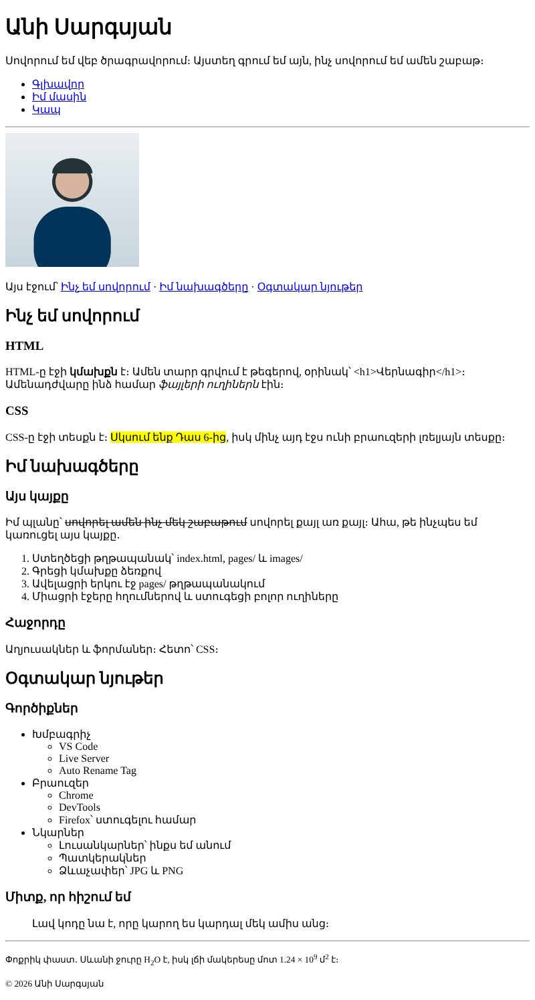
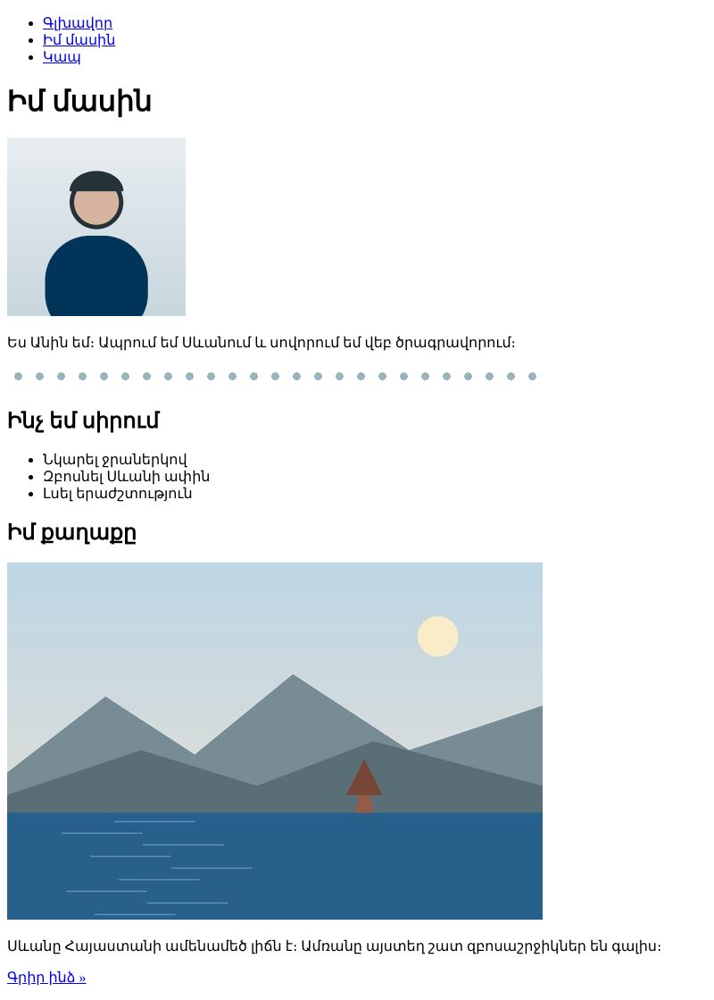
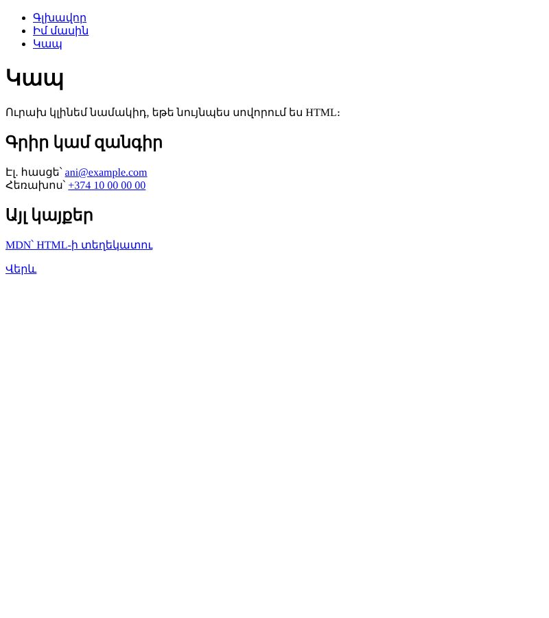

Տնային աշխատանք · HTML Դաս 02 · մինի-նախագիծ
Դաս 01-ի էջը դառնում է կայք․ երեք էջ, նավիգացիա, նկարներ, ցուցակներ և հղումներ։ Գլխավոր դասը՝ ֆայլերի ուղիները։
Օգտագործիր միայն Դաս 01–02-ի թեգերը՝ վերնագրեր, տեքստային թեգեր, ցուցակներ, հղումներ, նկարներ և հատուկ նշաններ։ Դեռ մի՛ օգտագործիր աղյուսակներ (Դաս 03), ֆորմաներ (Դաս 04), header/nav/main (Դաս 05) և CSS (Դաս 06)։
Երեք էջ, որոնք հղումներով կապված են իրար։ Ամեն էջում նույն նավիգացիան է, նկարները բեռնվում են բոլոր էջերում։



Սկսիր Դաս 01-ի քո index.html-ից։ Եթե այն չունես, վերցրու Դաս 01-ի օրինակը։ Կարող ես օգտագործել քո նկարները՝ նույն անուններով։
Նավիգացիան ցուցակ է, որովհետև այն հղումների ցուցակ է։ Գլխավոր էջում և pages/-ի էջերում ուղիները տարբեր են․
<ul>
<li><a href="index.html">Գլխավոր</a></li>
<li><a href="pages/about.html">Իմ մասին</a></li>
<li><a href="pages/contact.html">Կապ</a></li>
</ul><ul>
<li><a href="../index.html">Գլխավոր</a></li>
<li><a href="about.html">Իմ մասին</a></li>
<li><a href="contact.html">Կապ</a></li>
</ul>Անցիր բոլոր հղումներով բոլոր էջերից՝ 3 էջ × 3 հղում = 9 անցում։ Ոչ մեկը չպետք է բացի «Cannot GET» կամ դատարկ էջ։
Մեկ h1, երեք h2, ամեն h2-ի տակ երկու h3։ Տեքստերը՝ content.md-ից։
| Թեգ | Որտեղ օգտագործել |
|---|---|
strong | Կարևոր բառ՝ «HTML-ը էջի կմախքն է» |
em | Շեշտ՝ «ամենադժվարը ֆայլերի ուղիներն էին» |
mark | Ընդգծում՝ «Սկսում ենք Դաս 6-ից» |
s | Այլևս ճիշտ չէ՝ « |
small | Copyright և փոքր ծանոթագրություններ |
sub, sup | H2O, 109, մ2 |
blockquote | Մեջբերում |
Ցույց տուր էջում թեգ որպես տեքստ․ <h1>։ Ավելացրու © և copyright-ի տողում։
ol)՝ այն քայլերով, որոնցով կառուցել ես կայքըul-ը գտնվում է li-ի ներսում, ոչ թե նրանից հետո<ul>
<li>Խմբագրիչ
<ul>
<li>VS Code</li>
<li>Live Server</li>
<li>Auto Rename Tag</li>
</ul>
</li>
...
</ul>avatar.jpg-ը գլխավոր էջում (images/avatar.jpg) և «Իմ մասին»-ում (../images/avatar.jpg)width և height, որ էջը չ«ցատկի» բեռնվելիսalt՝ նկարագրիր, թե ինչ է նկարում, ոչ «նկար» կամ «photo»divider.png՝ alt=""։ Մեկնաբանության մեջ գրիր, թե ինչուhref="#learning" և այլն, իսկ h2-երին՝ համապատասխան idmailto: և tel: հղումներtarget="_blank" և rel="noopener"title-ըh1, երեք h2, ամեն մեկի տակ երկու h3ol և երկու մակարդակով ներդրված ul<, >, ©, alt, width, height, դեկորատիվը՝ alt=""mailto: և tel: հղումները բացում են ծրագիր| Սխալ | Ինչպես ուղղել |
|---|---|
pages/about.html-ում նկարը չի երևում | Մոռացել ես ../-ը․ ../images/avatar.jpg |
«Գլխավոր» հղումը pages/-ից բացում է pages/index.html | Ճիշտը՝ ../index.html |
| Խարիսխը չի աշխատում | href="#learning"-ում կա #, իսկ id="learning"-ում՝ ոչ։ Անունները պետք է նույնը լինեն մինչև տառը |
| Ներքին ցուցակը երևում է առանձին | Ներքին ul-ը դրված է </li>-ից հետո։ Տեղափոխիր այն li-ի ներսը |
Սրանք Դաս 02-ի տնային աշխատանքի կետերն են։ «մինի-նախագծում» նշվածները արդեն կատարել ես վերևի քայլերում, մնացածը կատարիր առանձին ֆայլերում կամ նույն թղթապանակում։
h1, երեք h2, ամեն մեկի տակ երկուական h3։ մինի-նախագծումstrong, em, s, mark, small, sub, sup, blockquote։ մինի-նախագծումindex.html, pages/about.html, pages/contact.html։ Ամեն էջում պիտի լինի նավիգացիա մյուս երկուսին։ մինի-նախագծումimages/ թղթապանակ և ցուցադրիր նույն նկարը երկու էջում էլ՝ ճիշտ ուղիներով։ մինի-նախագծումalt ամեն նկարի համար։ Ավելացրու նաև մեկ դեկորատիվ նկար՝ alt=""-ով և բացատրիր ընտրությունը մեկնաբանության մեջ։ մինի-նախագծումid + #)։ մինի-նախագծումmailto և tel հղումներ։ Ստուգիր՝ սեղմելիս ի՞նչ է կատարվում։ մինի-նախագծում< և >։ Ավելացրու նաև © և ։ մինի-նախագծումԵրբ բաժին 03-ի բոլոր կետերը նշված են, բացիր օրինակը և քո էջը կողք կողքի։ Բացիր երկուսի կոդն էլ խմբագրիչում։ Գտիր մեկ բան, որ դու արել ես այլ կերպ, և մտածիր՝ որն է ավելի հասկանալի և ինչու։ Քո լուծումը կարող է տարբերվել և լինել ճիշտ։